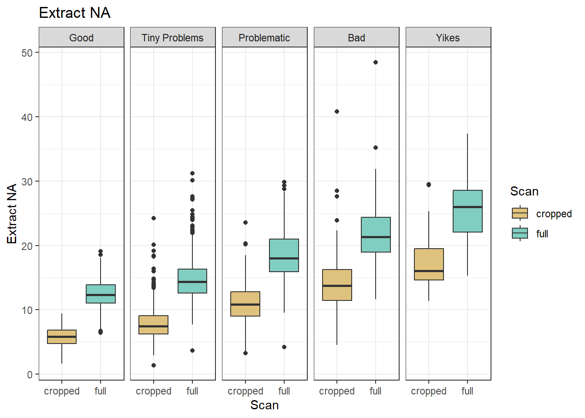
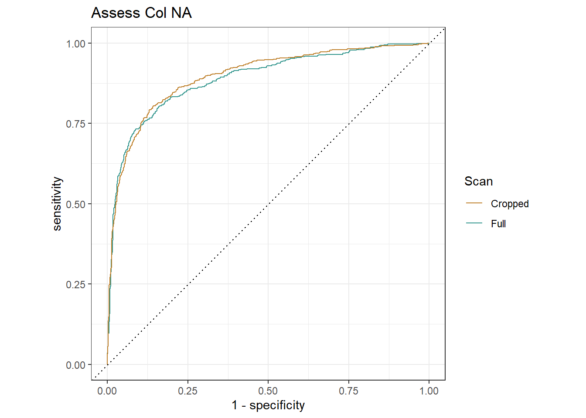

Comparative Analysis: features of full and cropped scans
Naga, if you have any problems running this file, exchange line 6 with
bibliography: “zotero.bib”
If that doesn’t work either, holler on slack
Comparison of features on Full and Cropped Scans
Abstract
Deciding if a scan’s quality is often difficult, and time consuming if a scan needs to be redone. The scanner, often not familiar with the statistical processes to follow, needs an evaluater to consider each scan’s quality before it leaves the microscope mount. We propose using the X3P scan quality indicator, and in this comparative analysis, we evaluate four of the features used to determine if a scan is of sufficient quality. We found that two of the features give superior results when calculated on a cropped version of an image, one of them is impartial to cropped or full image, and the last feature is best ran over the full image.
To conduct our analysis, we did a series of tests to compare the cropped version of a scan against the full version. We constructed scatter and box plots as well as ROC curves for visual analysis We trained a Generalized Linear Model (glm) to test the p scores, or importance, of each variable in the model, and constructed kernel density graphs to compare the scans. Every cropped scan and its full scan counterpart were found to have more than 90% correlation with each other, requiring us to use only one of them for each feature to avoid co-linearity issues.
Extract NA, a measure of the total missing value count in the scan over the total value count. This feature performed better when it is cropped with no reservations. The ROC curve and p score in the glm were both better for the cropped image. The kernel density graph was also more distinct for the cropped image.
Assess Bottomempty, a measure of missing value count in the bottom 20% of the scan compared to the total value count in the same area. This feature performed better when it is cropped with no reservations. The ROC curve and p score in the glm were both better for the cropped image. The kernel density graph was also more distinct for the cropped image.
Assess Col NA, the proportion of columns in the scans matrix which have more than 20% missing values. This feature performed only marginally better when cropped. The ROC area difference is only 0.008, and the p scores for both features were found to be extremely significant. The kernal density graphs are very similar with the cropped graph being slightly more distinct.
Assess Median NA Proportion, calculates the mean number of NA’s in each column, and then finds the median out of all those values. This feature performed better when left as the full scan. The ROC area for the cropped was better by only 0.001, the p values for both features were found to be extremely significant, but the full scan was lower. The kernel density graph was more distinct for the full images.
| Correlation | pvalue_Full | pvalue_cropped | auc_Full | auc_Cropped | |
|---|---|---|---|---|---|
| Extract NA | 0.908 | 0.229 | <2e-16 | 0.871 | 0.902 |
| Assess Bottomempty | 0.905 | 5.86e-10 | <2e-16 | 0.783 | 0.859 |
| Assess Col NA | 0.919 | 1.62e-06 | 1.17e-14 | 0.888 | 0.896 |
| Assess Median NA Proportion | 0.908 | <2e-16 | 6.77e-10 | 0.907 | 0.863 |
All of the features had significant outliers, which we have called “Followup Scans”, for their individual predictive power. We investigated the type I errors, false positives of a bad scan being predicted as good, and found them all to be “Tiny Problems” scans which could reasonably be re-classified as “problematic” or worse.
XXX Related Works - Do we need forensics specific papers here, or can we use general imagery comparative analysis?
Good question, and I don’t know - I’m not sure that there is any kind of forensic specific work out (yet). I’m waiting for a NIST paper to finally come out :)
Background and Introduction
XXX General stylistic comments
- there are no ’you’s in a scientific paper. Make sure to be specific of each actor.
Relevant citations for criticism of the subjective nature of current firearms comparisons: (President’s Council of Advisors on Science and Technology 2016; National Research Council (U.S.) 2009)
President’s Council of Advisors on Science and Technology (2016),
National Research Council (U.S.) (2009)
XXX Writing in progress - Some questions on this section, am I being too generic? Do I need to add more sources in this section?
Generally, it looks good, but we can probably get away with fewer words and more images :)
In many court cases, determining the source of evidence is crucial, whether it is finding the correct murder weapon, or proving which cartridge casing came from which firearm. The particular evidence of interest to this study is determining if a bullet is fired from a particular firearm.
Currently, the method used to determine if a specific bullet came from a specific firearm requires that a bullet is found or recovered during the investigation, preferably as undamaged as possible, and the firearm. An examiner would fire the weapon into a kevlar tube so that they had a second bullet to use as the control, or a known match to the barrel. Most modern firearms have rifling, which is a series of spiral grooves in a barrel that cause the bullet to spin, leading to greater speed, accuracy, and range. Rifling is done via mass production, but due to very small inconsistencies, and the use and treatment of the barrel after production, the rifling leaves striation marks on the bullets. Here, we are only interested in striation marks on land-engraved areas (LEAs). Striation marks show strong similarities between bullets from different firings through the same barrel, to the degree that they are considered in the forensic community to be ‘unique’ to the particular barrel (Page, Taylor, and Blenkin 2011), but a general assessment of the random matching probability has so far proven to be elusive. The grooves on the bullets are called striations and the general pattern is similar across all bullets fired from a particular barrel. Two main flaws in this method are that barrels are usually interchangeable on firearms, and that continued firing from the barrel will alter the chance of a match.
Forensic Examiners are the current standard for comparing if two bullets have sufficient striation matching to be considered a positive match. A forensic examiner is a person who uses a comparison microscope to view two of the bullets and their striations and matches them. The problem with using forensic examiners is that they are still subjective[Report to the president], and have been proven to have atleast higher than a 1% error rate. (President’s Council of Advisors on Science and Technology 2016; National Research Council (U.S.) 2009)
To further aid in forensic abilities and quantitative methods, CSAFE has been researching ways to use machine learning and other methods to automatically and quantitatively compare bullet striation marks. (Vanderplas et al. 2020), which compares bullets using a variety of statistical and mathematical models to generate confidence scores of the similarities of striation markings. Automated methods and forensic examiners alike have a similar issue that this paper will hereby address. The problem is differing quality of microscopy scans. In order to compare the scans, each bullet must be under a microscope and a digital scan be made. Scanning of the bullets can go wrong in a variety of ways, from lighting conditions, bullet placement in the holders, to actual damage to the bullets surface. In order to detect when there are flaws in the scanning process, we have created an RShiny app that reads in the scanned X3P files, and gives a confidence score, with 100 being a perfect, un-flawed scan, to 0 being a terrible scan.
To increase the speed and performance of our quality scanner, we decided to crop the X3P files, this helps eliminate the ‘noise’ around the images that can skew the accuracy of the results. By using smaller images, we also increase the speed of evaluation, as there is less to process.
This analysis is to compare the difference between the cropped versus non-cropped (full) version of a scan for quality identification. Cropped images have the potential for decreasing noise around the signal. The level of cropping we are considering is 5% from the left and right sides, and 10% off of the bottom of the image. In particular, we want to preserve the bottom of the image and the center as that is where most of the signal is. Below are examples of a full, full with marked edges, and a cropped image.

- Is this the kind of image you were imagining? I think we need to make the red lines beefier and more obvious


Features
Each of the features shares a similar set up, so the following assumptions and definitions will remain independently true for each of the features defined below.
Let \(A=\{NA\}\) be the set of undefined values. For simplicity of notation we will assume that the space of real values \({\rm I\!R}\) contains \(A\): \({\rm I\!R}:= {\rm I\!R} \cup A\).
Let \(X \in R^{m,n}\) be a real-valued surface matrix of dimensions m x n where m and n are strictly positive integers \(X = (x_{ij})_{1 \leq i \leq m, 1 \leq j \leq n}\).
The function extract_na calculates the percentage of missing values in the scan (part) under observation, e.g. for scan surface matrix \(X \in {\rm I\!R}^{m, n}\) the percentage of missing values is defined as:
The proportion of missing values in X is then defined as: \[ \frac{1}{m*n} \sum^m_{i=1} \sum^n_{j=1} \theta_A(x_{ij}) \\ \text{Where } \theta_A(x) = \left\{\begin{aligned} &1 &&: \text{if }x \in A\\ &0 &&: \text{otherwise}\\ \end{aligned} \right. \] Assess Bottomempty
The feature assess_bottomempty calculates the percentage of missing values in the bottom 20% of the scan.
Let \(R \subseteq {\rm I\!R}\) be a set of size m, where each element is the sum of the NA’s for the given row, defined as: \[ \forall i \in R: R_i = \sum^n_{j=1} \theta_A(x_{ij}) \\ \text{Where } \theta_A(x) = \left\{\begin{aligned} &1 &&: \text{if }x \in A\\ &0 &&: \text{otherwise}\\ \end{aligned} \right. \]
Let \(B \subset R\) be a set, which is the set of all values in \(R_i\), given that \(i \geq m*0.8\). Therefore, the proportion of missing values in \(X\)’s bottom 20% can be given by: \[ \frac{1}{m*n*0.2}\sum_{i=1}^{m*0.2}(R_i)*100 \] Assess Col NA
The function assess_col_na is the proportion of columns in the image matrix which have more NA’s than 20%.
For every column in the matrix of a scan, we find the proportion of scans in that column which are NA. Then we count how many of the columns whose proportion is greater than 20%, the pre-determined threshold of acceptable NA’s. Then we divide by the number of columns * 0.2 to get our final threshold adjusted number.
Let \(R \subseteq {\rm I\!R}\) be a set of size n, where each element is the sum of the NA’s for the given column, defined as: \[ \forall i \in R: R_i = \sum^m_{j=1} \theta_A(x_{ij}) \\ \text{Where } \theta_A(x) = \left\{\begin{aligned} &1 &&: \text{if }x \in A\\ &0 &&: \text{otherwise}\\ \end{aligned} \right. \]
We define \(P\) as the proportion of all NAs per column for every row, as defined here: \[ \forall i \in R: P_i = \frac{R_i}{n} * 100 \]
We now find the proportion of threshold adjusted columns in the matrix \[ \frac{\sum_{i=1}^n(P_i*\beta_B(P_i))}{n*0.2} \\ \text{Where } \beta_B(x) = \left\{\begin{aligned} &1 &&: \text{if }x > 20\\ &0 &&: \text{otherwise}\\ \end{aligned} \right. \]
The function assess_median_na_proportion calculates the mean number of NA’s in each column, and then finds the median out of all those values.
Let \(R \subseteq {\rm I\!R}\) be a set of size n, where each element is the mean of the NA’s for the given column, defined as: \[ \forall i \in R: R_i = \frac{\sum^m_{j=1} \theta_A(x_{ij})}{m} \\ \text{Where } \theta_A(x) = \left\{\begin{aligned} &1 &&: \text{if }x \in A\\ &0 &&: \text{otherwise}\\ \end{aligned} \right. \]
We then sort, and select the median of \(R\)
Appendix
Extract NA
Which of the features is better for discriminating between good and bad scans?
Warning: Returning more (or less) than 1 row per `summarise()` group was deprecated in
dplyr 1.1.0.
ℹ Please use `reframe()` instead.
ℹ When switching from `summarise()` to `reframe()`, remember that `reframe()`
always returns an ungrouped data frame and adjust accordingly.
ℹ The deprecated feature was likely used in the yardstick package.
Please report the issue at <https://github.com/tidymodels/yardstick/issues>.

[1] "Extract NA. Correlation: 0.908 Full AUC: 0.871 Cropped AUC: 0.902"| min | firstQ | med | mean | thirdQ | max | |
|---|---|---|---|---|---|---|
| Standard | 3.666645 | 12.79727 | 15.082281 | 15.915471 | 18.30296 | 48.45372 |
| Cropped | 1.389464 | 6.38338 | 8.060005 | 8.916349 | 10.57698 | 40.80471 |
Should we use features from just one type of scan or both?
Call:
glm(formula = GoodScan ~ extract_na + extract_na_cropped, family = binomial(),
data = full_data)
Deviance Residuals:
Min 1Q Median 3Q Max
-3.1882 -0.2394 0.3044 0.5298 4.0795
Coefficients:
Estimate Std. Error z value Pr(>|z|)
(Intercept) 7.16247 0.37858 18.919 <2e-16 ***
extract_na -0.04349 0.03613 -1.204 0.229
extract_na_cropped -0.58303 0.05020 -11.615 <2e-16 ***
---
Signif. codes: 0 '***' 0.001 '**' 0.01 '*' 0.05 '.' 0.1 ' ' 1
(Dispersion parameter for binomial family taken to be 1)
Null deviance: 2230.6 on 1849 degrees of freedom
Residual deviance: 1299.2 on 1847 degrees of freedom
AIC: 1305.2
Number of Fisher Scoring iterations: 6
Conclusion for Extract NA
The values for feature extract_NA are highly correlated between the cropped and the full scan.
Using good and scans with only tiny problems as overall ‘good’ scans, the feature applied to cropped scans has an increased accuracy compared to the feature values from the full scan.
We might want to follow up on the orange colored scans:
full_data$LAPD_id[full_data$followup][1] "FAU263-BA-L4" "FAU263-BC-L1" "FAU263-BC-L3" "FAU287-BC-L5" "FAU154-BD-L2"
[6] "FAU277-BA-L4" "FAU286-BA-L5"followupScans <- rbind(followupScans, full_data[full_data$followup == TRUE,])
# All followups for extract_na are mislabelled scans. They are all labelled as tiny problems but should be problematic or worse.Assess Bottomempty
Which of the features is better for discriminating between good and bad scans?


[1] "Assess Bottomempty. Correlation: 0.905 Full AUC: 0.783 Cropped AUC: 0.859"| min | firstQ | med | mean | thirdQ | max | |
|---|---|---|---|---|---|---|
| Standard | 8.516493 | 22.66947 | 27.54019 | 29.90259 | 34.63373 | 95.39375 |
| Cropped | 3.564558 | 10.78581 | 13.54205 | 15.28335 | 17.71191 | 84.22476 |
Should we use features from just one type of scan or both?
Call:
glm(formula = GoodScan ~ assess_bottomempty + assess_bottomempty_cropped,
family = binomial(), data = full_data)
Deviance Residuals:
Min 1Q Median 3Q Max
-2.6794 -0.2813 0.4084 0.6028 4.0680
Coefficients:
Estimate Std. Error z value Pr(>|z|)
(Intercept) 4.57647 0.25156 18.193 < 2e-16 ***
assess_bottomempty 0.09046 0.01460 6.194 5.86e-10 ***
assess_bottomempty_cropped -0.40779 0.02738 -14.895 < 2e-16 ***
---
Signif. codes: 0 '***' 0.001 '**' 0.01 '*' 0.05 '.' 0.1 ' ' 1
(Dispersion parameter for binomial family taken to be 1)
Null deviance: 2230.6 on 1849 degrees of freedom
Residual deviance: 1503.7 on 1847 degrees of freedom
AIC: 1509.7
Number of Fisher Scoring iterations: 5
Conclusion for Assess Bottomempty
The values for feature assess_bottomempty are highly correlated between the cropped and the full scan.
Using good and scans with only tiny problems as overall ‘good’ scans, the feature applied to cropped scans has an increased accuracy compared to the feature values from the full scan.
We might want to follow up on the orange colored scans:
full_data$LAPD_id[full_data$followup][1] "FAU263-BA-L4" "FAU287-BC-L5" "FAU254-BD-L4" "FAU275-BC-L5" "FAU275-BD-L3"
[6] "FAU277-BA-L4" "FAU286-BA-L5"followupScans <- rbind(followupScans, full_data[full_data$followup == TRUE,])Assess Col NA
Which of the features is better for discriminating between good and bad scans?


[1] "Assess Col NA Correlation: 0.919 Full AUC: 0.888 Cropped AUC: 0.896"| min | firstQ | med | mean | thirdQ | max | |
|---|---|---|---|---|---|---|
| Standard | 0.2573318 | 0.9244176 | 1.0755102 | 1.1654392 | 1.292844 | 4.368436 |
| Cropped | 0.0920783 | 0.4700281 | 0.6126759 | 0.6851693 | 0.807577 | 3.356120 |
Should we use features from just one type of scan or both?
Call:
glm(formula = GoodScan ~ assess_col_na + assess_col_na_cropped,
family = binomial(), data = full_data)
Deviance Residuals:
Min 1Q Median 3Q Max
-3.2254 -0.1897 0.3176 0.5365 3.6049
Coefficients:
Estimate Std. Error z value Pr(>|z|)
(Intercept) 7.3581 0.3785 19.440 < 2e-16 ***
assess_col_na -2.4724 0.5155 -4.796 1.62e-06 ***
assess_col_na_cropped -4.8233 0.6249 -7.719 1.17e-14 ***
---
Signif. codes: 0 '***' 0.001 '**' 0.01 '*' 0.05 '.' 0.1 ' ' 1
(Dispersion parameter for binomial family taken to be 1)
Null deviance: 2230.6 on 1849 degrees of freedom
Residual deviance: 1308.8 on 1847 degrees of freedom
AIC: 1314.8
Number of Fisher Scoring iterations: 6Conclusion for Assess Col NA
The values for feature assess_col_na are highly correlated between the cropped and the full scan.
Using good and scans with only tiny problems as overall ‘good’ scans, the feature applied to cropped scans has an increased accuracy compared to the feature values from the full scan.
We might want to follow up on the orange colored scans:
full_data$LAPD_id[full_data$followup][1] "FAU263-BA-L4" "FAU263-BB-L3" "FAU263-BC-L1" "FAU263-BC-L3" "FAU154-BD-L2"
[6] "FAU286-BA-L5"followupScans <- rbind(followupScans, full_data[full_data$followup == TRUE,])Assess Median NA Proportion
Which of the features is better for discriminating between good and bad scans?


[1] "Assess Median NA Proportion. Correlation: 0.908 Full AUC: 0.907 Cropped AUC: 0.863"| min | firstQ | med | mean | thirdQ | max | |
|---|---|---|---|---|---|---|
| Standard | 0.0000000 | 0.0033099 | 0.0108771 | 0.0207348 | 0.0271577 | 0.2552491 |
| Cropped | 0.0011692 | 0.0518201 | 0.0686747 | 0.0751096 | 0.0918769 | 0.2994505 |
Should we use features from just one type of scan or both?
Call:
glm(formula = GoodScan ~ assess_median_na_proportion + assess_median_na_proportion_cropped,
family = binomial(), data = full_data)
Deviance Residuals:
Min 1Q Median 3Q Max
-2.8226 -0.1079 0.3143 0.4865 5.2612
Coefficients:
Estimate Std. Error z value Pr(>|z|)
(Intercept) 4.384 0.257 17.060 < 2e-16 ***
assess_median_na_proportion -83.035 5.925 -14.014 < 2e-16 ***
assess_median_na_proportion_cropped -21.546 3.491 -6.171 6.77e-10 ***
---
Signif. codes: 0 '***' 0.001 '**' 0.01 '*' 0.05 '.' 0.1 ' ' 1
(Dispersion parameter for binomial family taken to be 1)
Null deviance: 2230.6 on 1849 degrees of freedom
Residual deviance: 1219.0 on 1847 degrees of freedom
AIC: 1225
Number of Fisher Scoring iterations: 6
Conclusion for Assess Median NA Proportion
The values for feature extract_NA are highly correlated between the cropped and the full scan.
Using good and scans with only tiny problems as overall ‘good’ scans, the feature applied to full scans has an increased accuracy compared to the feature values from the cropped scan.
We might want to follow up on the orange colored scans:
full_data$LAPD_id[full_data$followup][1] "FAU263-BC-L3" "FAU154-BD-L2" "FAU204-BC-L4"followupScans <- rbind(followupScans, full_data[full_data$followup == TRUE,])Followup Scans
followupUnique <- followupScans[duplicated(followupScans) == FALSE,]
followupScans %>% group_by(followupScans$LAPD_id) %>% summarize(
count = n()
)# A tibble: 12 × 2
`followupScans$LAPD_id` count
<chr> <int>
1 FAU154-BD-L2 3
2 FAU204-BC-L4 1
3 FAU254-BD-L4 1
4 FAU263-BA-L4 3
5 FAU263-BB-L3 1
6 FAU263-BC-L1 2
7 FAU263-BC-L3 3
8 FAU275-BC-L5 1
9 FAU275-BD-L3 1
10 FAU277-BA-L4 2
11 FAU286-BA-L5 3
12 FAU287-BC-L5 2# 3 hits: FAU154-BD-L2, FAU263-BA-L4, FAU263-BC-L3, FAU286-BA-L5
# 2 hits: FAU263-BC-L1, FAU277-BA-L4, FAU287-BC-L5
# 1 hits: FAU204-BC-L4, FAU254-BD-L4, FAU263-BB-L3, FAU275-BC-L5, FAU275-BD-L3FAU263_BA_L4 <- x3p_read("../data/followup_scans/LAPD - 263 - Bullet A - Land 4 - Sneox2 - 20x - auto light left image + 20% - threshold 2 - resolution 4 - Connor Hergenreter.x3p")
FAU263_BC_L1 <- x3p_read("../data/followup_scans/LAPD - 263 - Bullet C - Land 1 - Sneox2 - 20x - auto light left image + 20% - threshold 2 - resolution 4 - Connor Hergenreter.x3p")
FAU263_BC_L3 <- x3p_read("../data/followup_scans/LAPD - 263 - Bullet C - Land 3 - Sneox2 - 20x - auto light left image + 20% - threshold 2 - resolution 4 - Connor Hergenreter.x3p")
FAU277_BA_L4 <- x3p_read("../data/followup_scans/LAPD - 277 - Bullet A - Land 4 - Sneox2 - 20x - auto light left image + 20% - threshold 2 - resolution 4 - Connor Hergenreter.x3p")
x3p_image(FAU263_BA_L4, file="./Comparative-Analysis_files/figure-html/FAU263_BA_L4.png")
x3p_image(FAU263_BC_L1, file="./Comparative-Analysis_files/figure-html/FAU263-BC-L1.png")
x3p_image(FAU263_BC_L3, file="./Comparative-Analysis_files/figure-html/FAU263_BC_L3.png")
x3p_image(FAU277_BA_L4, file="./Comparative-Analysis_files/figure-html/FAU277-BA-L4.png")| LAPD.ID | Hit.Count | Current.Quality | Current.Problem | Recommended.Quality |
|---|---|---|---|---|
| FAU263-BA-L4 | 3 | Tiny Problems | Feathering | Bad |
| FAU263-BC-L3 | 3 | Tiny Problems | Feathering | Bad |
| FAU154-BD-L2 | 3 | Tiny Problems | Holes | Bad |
| FAU286-BA-L5 | 3 | Tiny Problems | Holes | Bad |
| FAU263-BC-L1 | 2 | Tiny Problems | Feathering | Bad |
| FAU287-BC-L5 | 2 | Tiny Problems | Feathering | Problematic |
| FAU277-BA-L4 | 2 | Tiny Problems | Holes | Problematic |
| FAU254-BD-L4 | 1 | Tiny Problems | Holes | Problematic |
| FAU275-BC-L5 | 1 | Tiny Problems | Holes | Problematic |
| FAU275-BD-L3 | 1 | Tiny Problems | Holes | Problematic |
| FAU263-BB-L3 | 1 | Tiny Problems | Feathering | Problematic |
| FAU204-BC-L4 | 1 | Tiny Problems | Holes | Bad |

FAU263_BA_L4 (3 hits, Tiny Problems, Feathering): Significant feathering on right side image, missing most of the left, and many missing values on bottom.

FAU263_BC_L3 (3 hits, Tiny Problems, Feathering): Contains significant feathering, holes, disproportionate edges and missing values at the bottom.

FAU154_BD_L2 (3 hits, Tiny Problems, Holes): Significant feathering across image.

FAU286_BA_L5 (3 hits, Tiny Problems, Holes): Significant missing values on the left, right, bottom right and center. Holes throughout center.

FAU263_BC_L1 (2 hits, Tiny Problems, Feathering): Significant feathering on right hand side, left side is missing most of the values, then feathering, then holes as it moves towards the middle. Bottom is also speckled with missing values.

FAU287_BC-L5 (2 hits, Tiny Problems, Feathering): Significant hole on right side, feathering on left and right sides, minor holes in the center.

FAU277_BA_L4 (2 hits, Tiny Problems, Holes): A few holes, significant missing values on the left, right, and bottom.

FAU254_BD_L4 (1 hits, Tiny Problems, Holes): Significant missing values on the bottom, holes across the center, missing section on right side.

FAU275_BC_L5 (1 hits, Tiny Problems, Holes): Missing a large section on the right and bottom. Holes in middle.

FAU275_BD_L3 (1 hits, Tiny Problems, Holes): Significant number of missing values on the left and right, as well as the bottom. Holes in center.
FAU263_BB_L3 (1 hits, Tiny Problems, Holes): Significant missing values on bottom, left, and right. Feathering on the right and a few holes in the middle.

FAU204_BC_L4 (1 hits, Tiny Problems, Holes): Feathering on each end of image, rotational issues on left edge, holes in the center